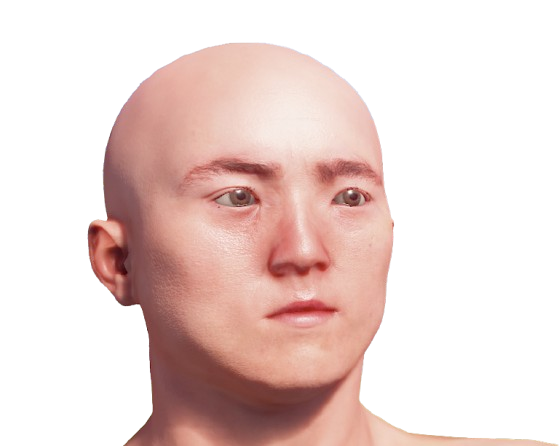
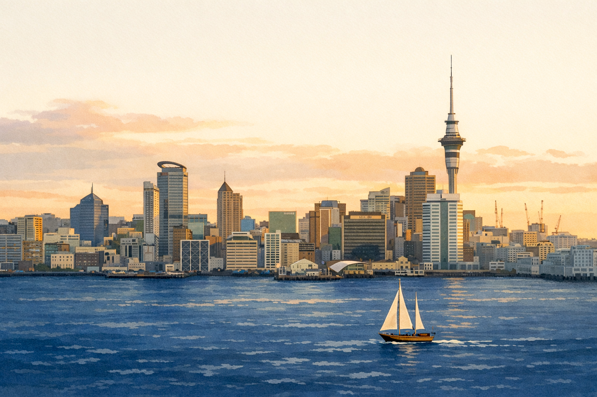

Sustainable practices to preserve our lifestyle and environment for future generations.
Working on front-end web development at the moment. In any case, I'm eager to learn and grow into any programming position.
Majoring in Marine and Computer Science.
Current website has been my first personal project.
Creating and learning through my own projects in my free time.
Created from scratch using only html, css, and javascript.
Looking to expand knowledge and learn a framework like React.
I've done a variety of jobs while studying ranging from hospitality, customer service to all sorts of labour and construction jobs.
During my university tenure I studied and worked part time, which in turn has given me a pretty mixed bag of skills.
I'd describe myself as a confident all-rounder.
I enjoy learning new things and I'm not shy to have a crack at any job.
Currently, I work as a handyman which I've been doing for about 8 years.
My duties range from groundskeeping, building repairs, driving, and all sorts of odd jobs in between.
Through this position I've gained a broad knowledge of construction, property management, contracting and even accounting.
Additionally, juggling this with a couple of papers each semester really pushed me to level up my organisation.
My most valuable experience without a doubt has been hacking computer science.
The logical mindset and analytical skills I gained from compsci made me an immensely better problem solver, and a more versatile learner.
Please feel free to contact me for any ideas or opportunities
liam-jackson@live.com